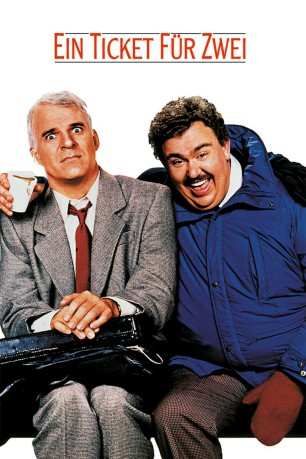
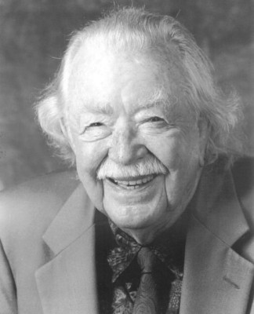

#340 Ein Ticket für zwei
Alternativ: Planes, Trains & Automobiles
 
 IMDB-Wertung: 7.6 / 10
IMDB-Wertung: 7.6 / 10  Metascore: 72
Metascore: 72 
Manch ein Reisender verspätet sich. Wieder andere müssen Umleitungen in Kauf nehmen. Die Unglücklichsten unter den Reisenden allerdings treffen auf Del Griffith, einem Verkäufer für Duschvorhangringe. So auch der Geschäftsmann Neal Page auf seinem Nachhauseweg von New York nach Chicago. Eigentlich wollte er mit seiner Familie Thanksgiving feiern. Doch ein Schneesturm sorgt dafür, daß das Flugzeug umgeleitet wird. Griffith bietet sich Page als Reisehelfer an, was die beiden von einem Desaster in's andere treibt. Ob im Flugzeug, per Anhalter auf einem Kühlschranktransporter, in einem Taxi mit einem verrückten Chauffeur, im Zug oder im Motel, in dem sie schließlich auch noch das Bett teilen müssen - das Chaos scheint perfekt...
Jahr: 1987
Dauer: 93 Minuten
FSK: 6
Land: USA Studio: Paramount PicturesTonspuren: DD2.0 - ,
Untertitel:
Auflösung: 1080p (1920×1080) Größe: 7731 MB
Genre: Komödie
Regisseur:  John Hughes
John Hughes
Drehbuch: John Hughes
Soundtrack: Ira Newborn
Darsteller:
 Steve Martin als Neal Page
Steve Martin als Neal Page John Candy als Del Griffith
John Candy als Del Griffith Laila Robins als Susan Page
Laila Robins als Susan Page Michael McKean als State Trooper
Michael McKean als State Trooper Dylan Baker als Owen
Dylan Baker als Owen- Carol Bruce als Joy
- Olivia Burnette als Marti
- Diana Douglas als Peg
 Martin Ferrero als Second Motel Clerk
Martin Ferrero als Second Motel Clerk Larry Hankin als Doobie
Larry Hankin als Doobie Richard Herd als Walt
Richard Herd als Walt Susan Kellermann als Waitress
Susan Kellermann als Waitress- Matthew Lawrence als Little Neal
 Edie McClurg als Car Rental Agent
Edie McClurg als Car Rental Agent- George Petrie als Martin
- Gary Riley als Motel Thief
 Charles Tyner als Gus
Charles Tyner als Gus- Susan Isaacs als Marie
- Diana Castle als Stewardess
-  Bill Erwin als Man on Plane
 Ben Stein als Wichita Airport Representative
Ben Stein als Wichita Airport Representative- Diane Nieman als Earring Customer
- John Moio als Screaming Driver
- Kevin Ash als Cab victim , uncredited
 Kevin Bacon als Taxi Racer , uncredited
Kevin Bacon als Taxi Racer , uncredited Troy Evans als Antisocial Trucker , uncredited
Troy Evans als Antisocial Trucker , uncredited Richard Fike als Street background , uncredited
Richard Fike als Street background , uncredited- Nancy Kusley als Mother in airport , uncredited
- Larry Ludwig als Man at Wichita Airport , uncredited
- Gary McNerney als Park Avenue Pedestrian , uncredited
 Peter Austin Noto als Baker , uncredited
Peter Austin Noto als Baker , uncredited- Ken Tipton als Holiday Traveler , uncredited
 Lyman Ward als John , uncredited
Lyman Ward als John , uncredited William Windom als Bryant , uncredited
William Windom als Bryant , uncredited- Lulie Newcomb als Owen's Wife
- John Randolph Jones als Cab Dispatcher
- Nicholas Wyman als New York Lawyer
- Gaetano Lisi als Cab Driver - New York
- Julie H. Morgan als Stewardess
- Ruth de Sosa als New York Ticket Agent
- Kim Genelle als Receptionist
- Grant Forsberg als Brand Manager
- David Raiport als Cafe Patron
- Andrew J. Hentz als Bus Lover
- Karen Meisinger als Bus Loverette
- Gary Palmer als Pilot
- Sylvia Vitrungs als Earring Customer
- Joann Taylor als Earring Customer
- Julie A. Herbert als Earring Customer
- Jennifer Allswang als Earring Customer
Datei: X:\1987\Ticket für zwei, Ein (1987, FSK6, 1920x1080).mkv seit 16.02.2015
Festplatte: HD 1987-1991
 Es gibt insgesamt 50 Filme in der Gruppe '1987'
Es gibt insgesamt 50 Filme in der Gruppe '1987'